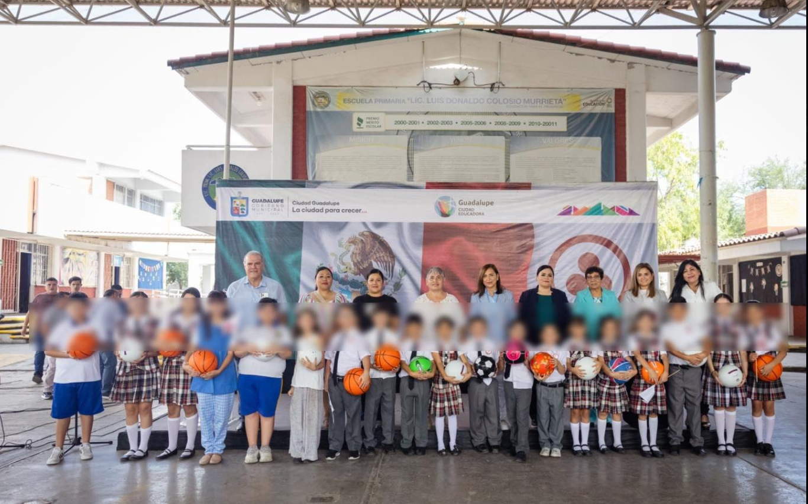
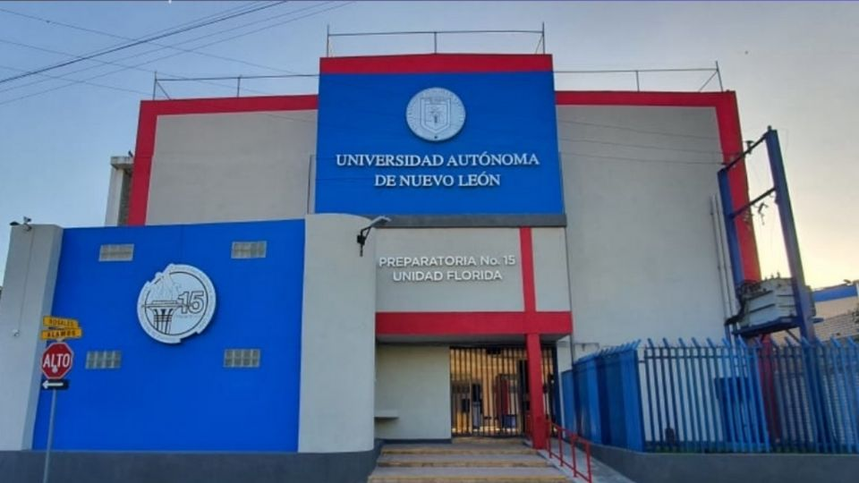
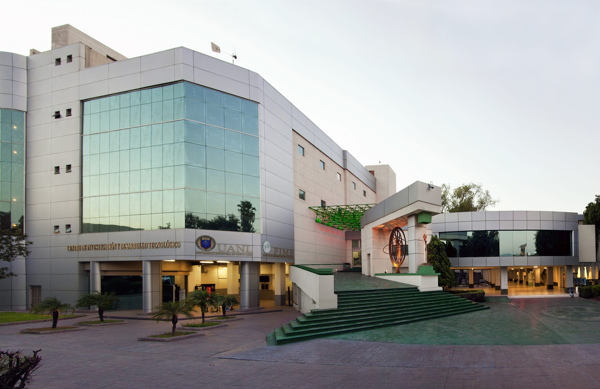

Me gradué de la primaria con medallas de excelencia académica por mis diplomas de 4to a 6to de primaria

Estudié en la preparatoria 15 Florida de la UANL

Estudiando Ingeniería en Tecnología de Software en la Facultad De Ingeniería Mecánica y Eléctrica

Estuve de diciembre a enero en Tokyo viviendo con nativos y aprendiendo japonés en Shibuya en la Escuela EF International Language School de la cual me gradué en el nivel intermedio avanzado con 90 de promedio final